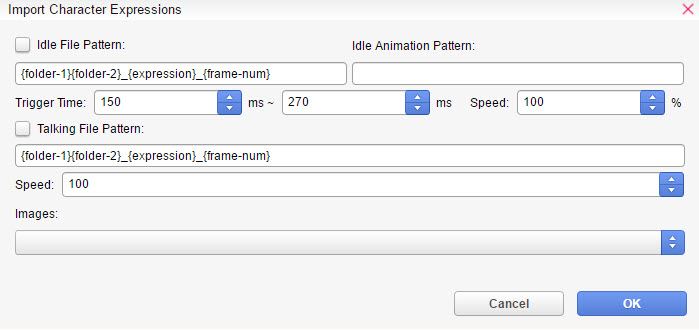
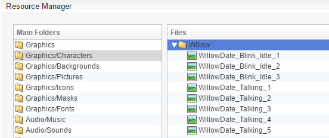
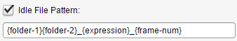
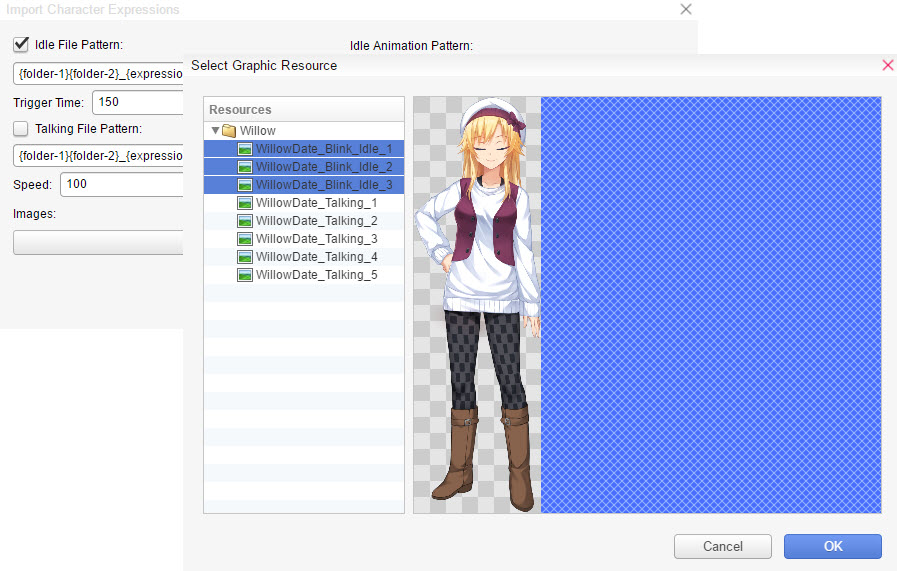
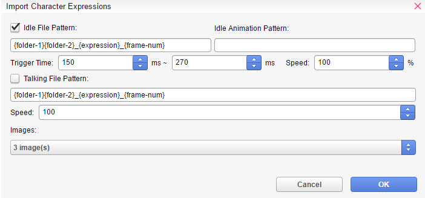
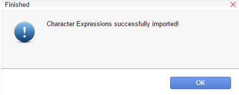
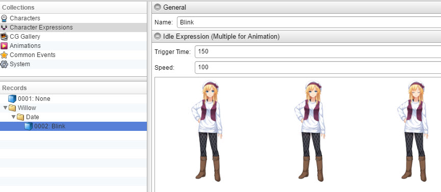

表达式导入器
Expression Importer 是一个实用程序，允许用户批量导入角色图像并创建数据库条目。
您可以为资源名称指定一个模式，该模式控制表达式的创建方式以及在哪个子文件夹中。
这对于有 200 张图像需要为角色表达式数据库创建条目的人来说尤其有用。
要访问导入器，工具 -> 脚本代理 -> 默认 -> 表达式导入器

空闲文件模式- 设置图像名称模式，用于转换角色表达式数据库中空闲图像。
空闲动画模式- 定义空闲动画模式，如 0-1-2-1-0。然后按此顺序创建动画帧。
触发时间- 仅适用于空闲表达式。空闲表达式将在您设置的毫秒数之间随机播放。
例如，如果您设置 2000 毫秒 - 4000 毫秒，它将计算从 2000 毫秒（最短）到 4000 毫秒（最长）开始播放空闲动画的时间。
说话文件模式- 设置图像名称模式，用于转换角色表达式数据库中说话图像。
速度 -动画的速度。您可以从 1% - 1000% 进行选择。默认值为 100。
图像- 要导入到角色表达式数据库的图像。它们必须首先通过资源管理器导入。
它是如何工作的？
如果您有一个文件名 WillowUniform_Angry，您可以使用模式{folder-1}{folder-2}_{expression}。
这会以这种格式在数据库中创建新条目。
Willow
-Uniform
--Angry
或者带有动画，如果您有：
WillowUniform_Angry_Idle_1
WillowUniform_Angry_Idle_2
WillowUniform_Angry_Idle_3
您可以使用{folder-1}{folder-2}_{expression}_Idle_{frame-num}自动创建：
Willow
-Uniform
--Angry -> 包含所有 3 个空闲帧
您还可以指定动画模式，如 0-1-2-1-0。这将按此顺序自动创建空闲帧。
确保选中了 Idle File Pattern（空闲文件模式）框，以及 Talking（说话），如果您有的话。否则导入器将无法工作。
如果您没有任何表情的动画帧，只需从模式中删除文本“_{frame-num}”。
如何使用
为了简单起见，我们将使用默认的。
根据以下模式命名您的图像文件名：{folder-1}{folder-2}_{expression}_{frame-num}。
它们必须首先通过资源管理器导入。

要访问导入器，工具 -> 脚本代理 -> 默认 -> 表达式导入器
如果未选中，请确保选中了 Idle File Pattern（空闲文件模式）框。

按 Images（图像）框并选择要设置在 Character Expressions（角色表达式）数据库中的图像。
按住 Shift 键() 选择多个图像。

您的窗口应如下所示。然后按 OK。


